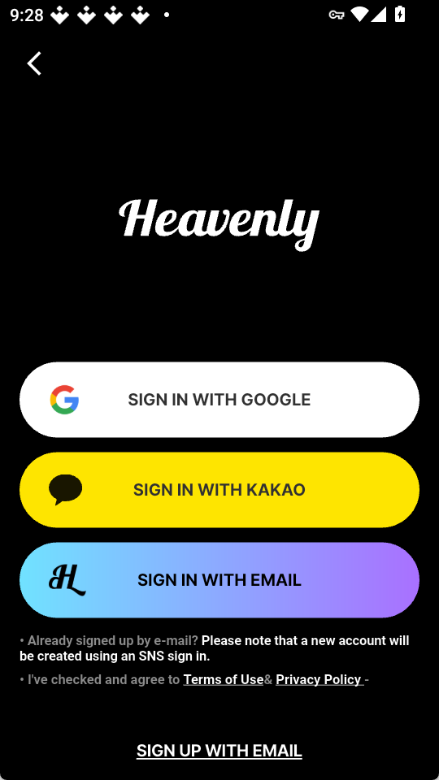

Heavenly 三年磨一剑——从 v3.0.13 回看这款影视 App 的版本进化史
以观察者视角梳理 Heavenly 从早期起步到 v3.0.13 的迭代脉络：底部四板块、双付费入口、每周追更节奏，哪些是一上来就有的，哪些是憋了好几个版本才补上的。
开场：站在 v3.0.13 回看
现在打开 Heavenly官网 发布的 App，底部四个板块 HOME / DISCOVER / EVENT / MY BOX 一字排开，顶部 PPV 和 MEMBERSHIP 两个付费入口清清楚楚地分开——这个界面已经稳了很久，我甚至想不起来它什么时候不是这样的。
文档站里给安装包标注的版本号是 v3.0.13，72MB 的 APK，安卓四步装好。但样本文档没有附 changelog，没有"v2.x 加了什么""v1.x 删了什么"这样的时间线。这种"不提版本历史"本身是有意思的——它说明当前结构已经稳定到团队觉得不需要再解释演进过程了，或者说，早期那些试错的痕迹已经被完全覆盖。
起步：样本文档没提的部分恰恰说明
我翻遍了文档站的四篇样本，涉及安装、首页、追更节奏、故障排查——没有一处提到 v1.x 或 v2.x 的界面长什么样。这让我想起那些产品已经跑到某个稳定期的 App：当用户被引导的全部注意力都集中在"当前版本怎么用"上时，团队往往默认旧版本已经完成了它的使命，不值得占用文档篇幅。
但从几个细节可以反推早期形态：
双付费入口的分离一定是某个大版本才敲定的。 PPV（按部买 Cube）和 MEMBERSHIP（月会员无限看）在当前版本里分得清清楚楚——首页两个独立按钮，不会在播放器里突然跳出弹窗。但影视 App 的早期版本几乎都会混着来：先让你充会员，遇到独占内容再告诉你"这个要额外买"，或者反过来。Heavenly 的这种分离感不是随手设计的，是踩过坑之后才定下来的策略。我倾向于认为这是 v2.x 某个版本的核心改动——文档不写，但首页把这两个按钮并排放的方式本身就是"我们想了很久才这么放的"的信号。
底部四板块的结构大概率是从三板块演化来的。 EVENT 活动页在样本里的定位很特殊——它不承载日常内容消费，只放限时活动、应援、HEAVENLY NIGHT 这类内容。这类板块在 App 早期通常是被塞进 HOME 或 DISCOVER 的二级入口里的。把 EVENT 提升到底部常驻，说明团队在某个阶段判断"活动运营"已经成为核心用户留存手段，不再是边角功能。这个判断本身就是产品走向成熟期的标志。
迭代节奏里藏着的团队优先级
从文档能确认的事实出发，我注意到几个有意思的迭代规律：
追更体验一直在打磨，但追剧日历至今没做。 heavenly文档里给了四种追更新番的方式：DISCOVER 页刷新、TOP 10 榜单、会员 push 通知、MY BOX 想看列表——这四种覆盖了主动刷新到被动提醒，说明团队在追更这个场景上花了不少心思。但文档作者在"追剧日历"一节直接说"Heavenly 本身没有专门的追剧日历功能"，然后给了三个替代方案（MY BOX 列表、手机日历、标签订阅）。这是一种很坦诚的写法——文档不美化，也不回避。
这件事很能代表 Heavenly 的产品逻辑：用户最痛的那几个点（怎么知道有新番、怎么不忘记追）他们死磕，锦上添花的功能（一个好看的追剧日历 Widget）他们就放一放。 不是技术做不到，是优先级排序里它排不上。
故障排查文档的详细程度暗示了安装问题是历史痛点。 文档站里专门有一篇"安装被拦截"的排查文章，列了原生 Android、小米、华为、OPPO 四家厂商的具体路径，还提到企业 MDM 策略、儿童模式、安全软件拦截等边界情况。这不是给第一次写 Android App 的团队写的文档——这是踩过无数次坑、收到过大量安装失败反馈之后才总结出来的。安装被拦截这件事，从某个版本开始变成高频问题，团队先是加了系统弹窗里的"仍要安装"引导，然后在文档里补了完整的排查路径——但底层逻辑可能没有变：他们就是坚持用 APK 分发，下载只能走第三方渠道进手机，不进应用商店，所以这个痛点会一直存在。
会员片库的刷新节奏是稳定信号。 文档提到"Heavenly 新番完结后约 0~4 周进入会员片库"——这个"约 0~4 周"的窗口其实不短，但写在文档里说明它已经是可预期的，不是今天更明天不更的状态。影视平台早期最容易出问题的就是会员内容更新的稳定性，用户充了会员发现片库半个月不动会直接退订。Heavenly 能把刷新节奏写入文档，说明这件事至少在 v2.x 后期就已经跑顺了。
照这个路线，下一步大概率的走向
从 v3.0.13 的形态倒推，我对接下来几个版本有几个判断——明确说这是从迭代规律推的，不当官方口径：
第一，底部四板块的结构短期内不会动。 一个 App 如果连文档都在围绕这套结构写，说明它已经过了快速试错期。新功能会以二级入口或首页卡片的形式出现，不会改底层导航。
第二，追剧日历这件事可能永远不会做。 不是技术原因，是从文档里"给替代方案而不是等功能"的写法来看，团队更倾向于让用户用现有能力组合出自己的追更工作流，而不是把这个功能内置到 App 里。这是一种很典型的"够用就行"的产品态度。
第三，故障排查文档会继续加厚。 只要 APK 分发渠道不变，安装拦截就是永远的高频问题。可能下一个版本他们会在安装包里加一个"安装助手"组件，或者文档里再多两三个厂商的路径——但本质上还是在和 Android 系统的安全机制打持续战。
第四，付费结构可能继续微调。 PPV 和 MEMBERSHIP 的分离是当前版本的一大优点，但如果后续引入更多地区（比如东南亚市场），可能会出现地区差异化定价或更多的付费档位。
一个观察者的总结
我对 Heavenly 的产品史最大的感受是——它像一个已经把自己想清楚了的 App。 文档不写 changelog，版本号只在安装包上标，界面不搞大改，踩过的坑（安装拦截、付费弹窗）用务实的方式补（详细排查文档、双入口分离），不急着加功能但把核心场景（追更）打磨到能给四种方案。
这类 App 在影视工具类里不算激进，但用户留存通常会很稳——因为它不会让你每次打开都重新学习一遍怎么用，也不会在你最想看的时候突然跳出来催你充钱。站在 v3.0.13 看过去，它的每一步迭代都像是在"让这件事做得更顺手"，而不是"让这件事变得更不一样"。
关于这款 App 的资料我同步维护在三个代码仓库里，GitHub 是主阵地，国内网络环境下想同步可以看 Gitee 或 GitCode 镜像。
